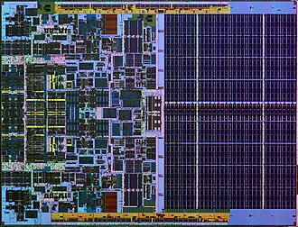
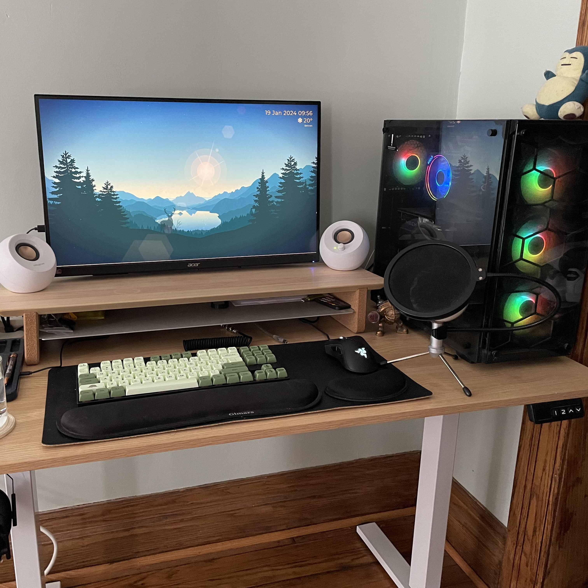

Network and Home Server
ช่วง 1 ปีที่ผ่านมา ผมได้หาข้อมูลและลองผิดลองถูกกับการทำ Home Server เอง ประกอบจากคอมสำนักงานเก่า โดยผมใช้ TrueNAS เป็นหลัก ปัจจุบันกำลังหาข้อมูลเรื่องการ Host เซิร์ฟเวอร์ Cloud เองอยู่ และใช้เซิร์ฟเวอร์เครื่องนี้เป็น NAS ไว้เก็บข้อมูลและโหลด Bittorrent เป็นหลักครับ
Motorsports and Automobile
ผมเป็นคนที่ชอบเรื่องรถและยานยนต์มาตั้งแต่มัธยมแล้วครับ ผมชอบในวิศวกรรมของชิ้นส่วนแต่ละชิ้น ชิ้นนี้ทำงานยังไง สัมพันธ์กับชิ้นอื่นยังไง หลังจากขึ้นมหาลัยก็ได้เจอเพื่อนกลุ่มที่ชื่นชอบในเรื่องเดียวกัน เวลาว่างในผมไม่รู้จะทำอะไรก็ชอบหาข้อมูลใหม่ๆ ส่วนมากจากวีดิโอใน Youtube จากช่อง "Sandwish Media"

Computer Infrastructure
Background ครอบครัวผมทำงานเปิดร้านถ่ายเอกสารครับ ผมโตมาในสภาพแวดล้อมที่เต็มไปด้วยคอมพิวเตอร์และเครื่องถ่ายเอกสาร เรียกได้ว่าผมอยู่กับคอมมาตั้งแต่เกิด และสนใจมาตลอด ทำให้ผมเลือกเรียนสาขานี้ ผมชอบหาข้อมูลเรื่องคอมจากวิดีโอใน Youtube แต่ไม่ตายตัวว่าดูจากช่องไหน แต่หลักๆจะดู "Linus Tech Tips" และ "iHAVECPU"

Set ups
ตามมาจากความสนใจด้านคอมพิวเตอร์ของผม ผมเห็นการจัดโต๊ะคอมให้เป็นระเบียบและสวย มีองค์ประกอบอย่างพอดีกับการจัดวาง จนขึ้นมหาลัยผมถึงมีโอกาสแต่งโต๊ะคอมของตัวเอง (จะมีรูปอยู่ในหน้า Gallery นะครับ) มันไม่ได้สมบูรณ์แบบ แต่ก็พัฒนาไปเรื่อยๆ ผมมักจะดูแนวทางจากกลุ่ม "แต่งโต๊ะคอมกัน" เป็นกลุ่มใน Facebook ที่ผู้คนมาแนะนำการแต่งโต๊ะคอม และแบ่งปันของตกแต่งกันครับ